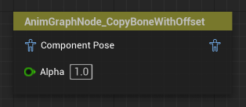
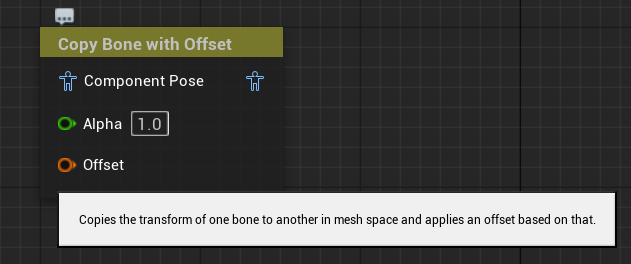
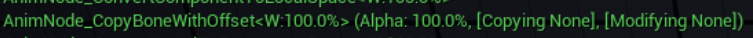
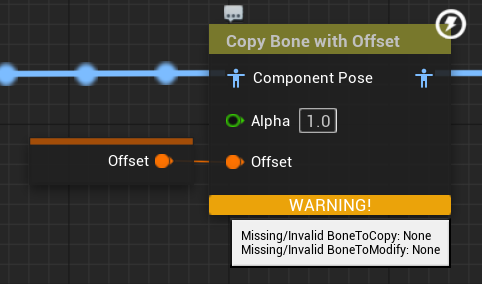
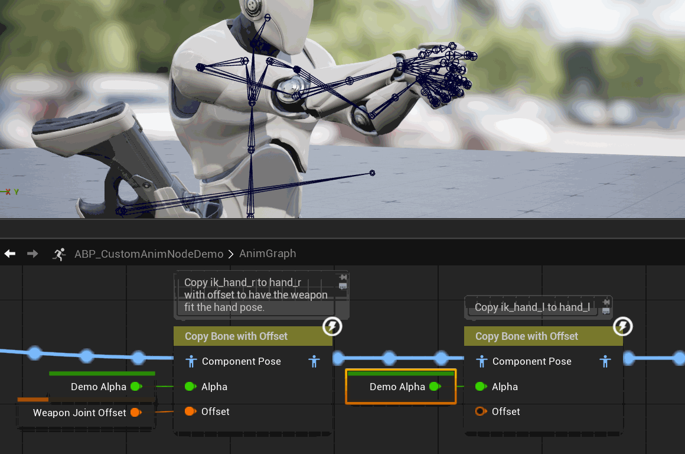

Your First AnimNode
Today, we are going to create our very own, very first AnimNode that can be used to modify the pose in the AnimGraph of an Animation Blueprint in Unreal Engine.
AnimNodes are a deep topic with a lot of nuances. This blog post will skip over most of that. The goal is to get something working. To introduce the basic concepts of how to create AnimNodes using C++, how to improve their UX beyond basic functionality and what to watch out for.
You can read through this post, or code alongside it, and at the end you should have a simple but working AnimNode ready for use, but more importantly: You should be primed for creating your own AnimNodes when needed, and maybe even be able to collaborate with others on their code.
As such, you don’t need to have any specific experience in terms of Animation Programming in Unreal Engine.
Step 0: What you need to know
What you do need is:
- Basic knowledge about how Animation Blueprints are used in the Editor and how an AnimNode presents itself to the user
- Basic knowledge of C++ within of Unreal Engine. This means: You should be able to build your project, and have a basic understanding of Unreals reflection system and how to use the USTRUCT, UCLASS, UPROPERTY reflection macros and their specifiers. Also, you should at least have a basic understanding of code modules in UE.
The assumed starting point for this post is a working Unreal Engine C++ project, but you don’t need any specific content.
Got all that? Great, let’s go!
Step 1: A working NoOp
Our first goal is to just get an AnimNode that we can use in the Editor. It doesn’t do anything yet, but we will see that even this first, seemingly simple step has it’s pitfalls.
In Unreal, AnimNodes consist of two separate parts:
- A runtime struct that performs the actual pose-logic and
- An Editor Class that represents the node in the editor
AnimNodes are generally very generic functional building blocks, and are reusable across characters by nature. As such, it is pretty natural to structure our AnimNodes into a PlugIn in Unreal, and that is what we will do. So to start, we’ll set up a Plugin with this structure:
YourFirstAnimNode
| YourFirstAnimNode.uplugin
| Source
| | AnimNodeTutorial
| | | Private
| | | | AnimNodeTutorial.cpp
| | | Public
| | | | AnimNodeTutorial.h
| | | AnimNodeTutorial.Build.cs
Fill your .uplugin file with the data you want, and make sure that this first module we have in there is a Runtime module, like this:
"Modules": [
{
"Name": "AnimNodeTutorial",
"Type": "Runtime",
"LoadingPhase": "Default"
}
This module will contain all the data our AnimNodes will require at runtime, meaning in the editor, but also in the final packaged game.
So, let’s start with the actual AnimNode.
The Runtime Struct
Our goal is to create a simple Skeletal Control AnimNode that copies the transform of one bone and applies it to another bone. And we want to be able to add an offset to this copied transform.
So the first step is to add “AnimGraphRuntime” to our public dependencies in the .Build.cs file for our runtime module.
PublicDependencyModuleNames.AddRange(
new string[]
{
"Core",
"AnimGraphRuntime",
}
);
This is required, since it contains the baseclasses that our runtime struct will inherit from. With this done, we can finally create the actual AnimNode that contains our functionality.
This comes in the form of a USTRUCT that inherits from FAnimNode_Base.
But since we want to modify only specific bones, we want our node to inherit from a more specialized struct: FAnimNode_SkeletalControlBase.
This already provides us with a ton of convenience functionality that we will not need to care about, and it makes creating our first AnimNode a whole lot easier.
This struct will not be exposed to Blueprints using the default reflection system, but instead a dedicated GraphNode that we will create later on, so we mark it as BlueprintInternalUseOnly
#pragma once
#include "CoreMinimal.h"
#include "BoneControllers/AnimNode_SkeletalControlBase.h"
#include "AnimNode_CopyBoneWithOffset.generated.h"
#define PLUGIN_API ANIMNODETUTORIAL_API
USTRUCT(BlueprintInternalUseOnly)
struct PLUGIN_API FAnimNode_CopyBoneWithOffset: public FAnimNode_SkeletalControlBase
{
GENERATED_BODY()
};
#undef PLUGIN_API
Also make sure to include the export macro. This is also required for our GraphNode to work in the next step.
We’ll leave the cpp file empty for now.
The Editor Node
Now to the second part: The Editor Node. This is a class derived from UAnimGraphNode_Base that is responsible for how this node is displayed in the AnimGraph.
It provides us with a bunch of little bits of functionality that are very useful when working on Animation Blueprints, but don’t serve any use in the final game.
But, since this is only in the editor, we’ll need a new module. This module is generally of type UncookedOnly, and its name is by convention the name of the runtime module suffixed with Editor.
So we’ll expand our plugin to the following structure:
AnimNodeTurorial
| AnimNodeTutorial.uplugin
| Source
| | AnimNodeTutorial
| | | [...]
| | AnimNodeTutorialEditor
| | | Private
| | | | AnimNodeTutorialEditor.cpp
| | | Public
| | | | AnimNodeTutorialEditor.h
| | | AnimNodeTutorialEditor.Build.cs
and add BlueprintGraph and AnimGraph as to its dependencies as well as our AnimNode runtime module:
PublicDependencyModuleNames.AddRange(
new string[]
{
"Core",
"AnimGraph",
"BlueprintGraph",
"AnimNodeTutorial",
}
);
Also add it to our .uplugin list of modules:
{
"Name": "AnimNodeTutorialEditor",
"Type": "UncookedOnly",
"LoadingPhase": "Default"
}
In a similar fashion to the runtime struct, all editor nodes for AnimNodes should derive from UAnimGraphNode_Base, but we are going to pick a more specialized subclass: UAnimGraphNode_SkeletalControlBase.
The way this editor node represents our runtime struct is that it has a member of the type of our runtime struct. In the special case of SkeletalControl nodes, we also want to override the protected virtual method GetNode() to return a pointer to that member.
Doing that should yield a result like this in the header file:
#pragma once
#include "CoreMinimal.h"
#include "AnimNode_CopyBoneWithOffset.h"
#include "Editor/AnimGraph/Public/AnimGraphNode_SkeletalControlBase.h"
#include "AnimGraphNode_CopyBoneWithOffset.generated.h"
#define PLUGIN_API ANIMNODETUTORIALEDITOR_API
UCLASS()
class PLUGIN_API UAnimGraphNode_CopyBoneWithOffset : public UAnimGraphNode_SkeletalControlBase
{
GENERATED_BODY()
public:
UPROPERTY(EditAnywhere, Category=Settings)
FAnimNode_CopyBoneWithOffset Node;
protected:
virtual const FAnimNode_SkeletalControlBase* GetNode() const override { return &Node; }
};
#undef PLUGIN_API
And again, we’ll leave the cpp file empty at this stage.
Profit!
…almost. But if we now build our project and start the editor, we should be able to create our new node in the AnimGraph!

Step 2: Making it functional
Adding our variables
Now that we’ve got our first bit of something, let’s actually make it do something, because right now, it will have no effect if we wire it up and just pass along the input pose the node receives.
To achieve that, we will need to add some member variables to our runtime struct. If we mark each of them as an editable UPROPERTY, Unreal will pick up on them and display them automagically in the details panel of the AnimGraph when the node is selected.
Since we want to copy the transform of one bone to another with this node, we need some way of addressing specific bones and more importantly, we need to expose them to the user.
The way we do that in AnimNodes is using FBoneReference. For our purposes, it is the way of accessing any data the engine might have about a specific bone during evaluation.
So let’s create two FBoneReference members of our runtime struct, one to specify the bone to copy, and one to specifiy the bone we will apply that copied transform to.
Also we will add a FTransform member that will be our offset transform from the joint we copy.
The bones should generally only be set in the editor, so we set them as EditDefaultsOnly, but what if we want to modify the transform at runtime? That might be quite common, so we need to expose it to the graph, so the user can bind variables to it by adding the meta-specifier PinShownByDefault. There is also a corresponding PinHiddenByDefault meta-specifier that can be used and the only thing that changes is whether that member will be exposed to the graph when the node is created. We can hide or show them in the editor ourself after that point, irrespective of the specifier.
Using our variables
With these in place, we will need to override 3 functions from our base struct:
InitializeBoneReferences- Here we will make sure our bone references are initialized. This gets called by the engine when the node is initialized but also when the bones change, for example when LOD switches.
IsValidToEvaluate- Here we can make sure our input data is valid so we can proceed to evaluation. If we return false, evaluation will be skipped entirely.
EvaluateSkeletalControl_AnyThread- This is where the actual meat of the AnimNode lives. This gets called every frame to modify our input pose and produce an output that gets fed into the next node of the graph. As the name suggests, this method can be called from any thread, not just the game thread, since Unreal natively supports multithreaded animation evaluation.
So together with our new members, the structs declaration in th header should now look like this:
USTRUCT(BlueprintInternalUseOnly)
struct PLUGIN_API FAnimNode_CopyBoneWithOffset: public FAnimNode_SkeletalControlBase
{
GENERATED_BODY()
UPROPERTY(EditDefaultsOnly)
FBoneReference BoneToModify;
UPROPERTY(EditDefaultsOnly)
FBoneReference BoneToCopy;
UPROPERTY(EditAnywhere, meta = (PinShownByDefault))
FTransform Offset = FTransform::Identity;
protected:
// FAnimNode_SkeletalControlBase Interface
virtual void InitializeBoneReferences(const FBoneContainer& RequiredBones) override;
virtual bool IsValidToEvaluate(const USkeleton* Skeleton, const FBoneContainer& RequiredBones) override;
virtual void EvaluateSkeletalControl_AnyThread(FComponentSpacePoseContext& Output, TArray<FBoneTransform>& OutBoneTransforms) override;
//~ FAnimNode_SkeletalControlBase Interface
};
Initializing Bone References
Moving on to the definition of these functions, we’ll start with InitializeBoneReferences. This takes in a const ref to a FBoneContainer which is a new type to us. Nonetheless, it is a core part of all AnimNode programming.
FBoneContainer is a struct that holds a ton of data related to the current set of bones that are in the evaluated pose. Most importantly for us though, we can use it to determine the index of the bones we want to reference.
First, we want to initialize all our bone references with this bone container, so lets do that.
void FAnimNode_CopyBoneWithOffset::InitializeBoneReferences(const FBoneContainer& RequiredBones)
{
BoneToCopy.Initialize(RequiredBones);
BoneToModify.Initialize(RequiredBones);
}
If we take a look at the Initialize() method we are using here, we will see that it returns a bool value. This indicates whether the initialization was successful, which is useful if we need to walk the hierarchy for example to find the parents of bones, since we can stop early when the current skeleton is missing relevant bones, for example. For now, we don’t need it though.
Guarding Evaluation
Next, we’ll implement IsValidToEvaluate, which guards the Evaluation.
Now that we have our bone refs set up, we can easily use them to check whether we can safely access them, again using an FBoneContainer we get passed into this method.
And while we are at it, we can also make sure that our offset transform is NaN-free. This is a rule unreal enforces in non-shipping and non-test builds using UE::Anim::Private::ValidatePose after our node has finished evaluating.
Taking all that into account we arrive at something like this:
bool FAnimNode_CopyBoneWithOffset::IsValidToEvaluate(const USkeleton* Skeleton, const FBoneContainer& RequiredBones)
{
return BoneToCopy.IsValidToEvaluate(RequiredBones)
&& BoneToModify.IsValidToEvaluate(RequiredBones)
&& !Offset.ContainsNaN();
}
Modifying the pose
And finally, we are ready for our actual evaluation method: EvaluateSkeletalControl_AnyThread().
Now we actually get two relevant inputs to this function:
FComponentSpacePoseContext& Output, which we can use to access any data related to the ongoing evaluation and even most of the game around us using the containedFAnimInstanceProxyif desired.TArray<FBoneTransform>& OutBoneTransforms, which is an empty array that we are supposed to fill with the data of the bones we modify.
Especially the OutBoneTransforms is the relevant bit, because whatever we do with this AnimNode, it will boil down to writing into this array.
But first, we need to obtain the transform of the bone we want to copy, so how do we do that? Again, with the help of an FBoneContainer!
The basic idea is that any given pose is just an array of transforms. If we know which index our bone corresponds to, we can simply look it up in that array and do whatever we want with it.
That index comes in the form of a FCompactPoseBoneIndex we can get from a FBoneReference. The bone container we use for that can be found on the FAnimInstanceProxy we find in our Output context parameter.
With this index we can look up the transform of our bone in the current pose, which is also part of the Output context object we get passed into the function. Note that that pose is a Component Space pose, and as such the transforms we retrieve will also be in component space.
Once we have the transform we want to copy, we just need to apply our offset to it, which we can simply do by multiplying our Offset with the bone’s transform. Keep in mind that the order of operands matters when composing transforms (meaning A*B is not the same as B*A when it comes to transforms).
But okay, got that. How do we add that to the OutBoneTransforms? What even is a FBoneTransform?
Actually, it isn’t really anything new or special. The array we are given will always be an empty one, and we have to fill it.
We can construct an FBoneTransform from a FCompactPoseBoneIndex, which identifies the bone we want to modify, and a FTransform, which is the transform we want to apply to that bone. We already have the transform we just calculated, and we can get the index of our BoneToModify just the same way we did before.
So we construct a FBoneTransform using these two and add it to our OutBoneTransforms and that’s it, our Node works!
The final code for our evaluation method looks like this:
void FAnimNode_CopyBoneWithOffset::EvaluateSkeletalControl_AnyThread(FComponentSpacePoseContext& Output,
TArray<FBoneTransform>& OutBoneTransforms)
{
check(Output.AnimInstanceProxy)
const FBoneContainer& RequiredBones = Output.AnimInstanceProxy->GetRequiredBones();
const FCompactPoseBoneIndex BoneToCopyIdx = BoneToCopy.GetCompactPoseIndex(RequiredBones);
const FTransform& CopiedTransform = Output.Pose.GetComponentSpaceTransform(BoneToCopyIdx);
const FTransform FinalTransform = Offset * CopiedTransform;
const FCompactPoseBoneIndex BoneToModifyIdx = BoneToModify.GetCompactPoseIndex(RequiredBones);
OutBoneTransforms.Add(FBoneTransform(BoneToModifyIdx, FinalTransform));
}
Restart the editor, and have a play with it. Everything should work now.
FCompareBoneTransformIndex-predicate.
OutBoneTransforms.Sort(FCompareBoneTransformIndex());
Step 3: Making it nice
Okay, so we have something working. That’s it, right? Our work is done here!
Weeeell, not quite. I mean yes, we could call it a day, but there is a lot more we can expand on with relatively little effort. Some of these may be more cosmetic points, but others will definitely boost the UX of whoever is using, maintaining or debugging this node in the future. Even if that someone turns out to be ourself.
A Prettier GraphNode
There is a bunch we can to to improve the appearance of the node in the editor. For that lets go back to our AnimGraphNode that represents our struct in the editor and override a couple methods we are provided with.
At least we want to give it a better title and description when we hover over it.
To do that, let’s implement GetNodeTitle() and GetControllerDescription.
To the .h file of our GraphNode we would add:
// UEdGraphNode Interface
virtual FText GetNodeTitle(ENodeTitleType::Type TitleType) const override;
//~ UEdGraphNode Interface
protected:
// UAnimGraphNode_SkeletalControlBase Interface
virtual FText GetControllerDescription() const override;
//~ UAnimGraphNode_SkeletalControlBase Interface
and implement them in the cpp something like this:
FText UAnimGraphNode_CopyBoneWithOffset::GetNodeTitle(ENodeTitleType::Type TitleType) const
{
return FText::FromString(TEXT("Copy Bone with Offset"));
}
FText UAnimGraphNode_CopyBoneWithOffset::GetControllerDescription() const
{
return FText::FromString(TEXT("Copies the transform of one bone to another in mesh space and applies an offset based on that."));
}
Now, it actually gets displayed with the NodeTitle and we get a tooltip when we hover over it.

Debug Info
You are probably aware of the ShowDebug Animation command we can use in Unreal. It is very useful.
If we try looking at what our node does right now, we will see that it just gives us a note that this node does not override a method called GatherDebugData. So lets do that next.
In our runtime struct header we add:
// FAnimNode_Base Interface
virtual void GatherDebugData(FNodeDebugData& DebugData) override;
//~ FAnimNode_Base Interface
and in the cpp:
void FAnimNode_CopyBoneWithOffset::GatherDebugData(FNodeDebugData& DebugData)
{
const float ActualBiasedAlpha = AlphaScaleBias.ApplyTo(Alpha);
FString DebugLine = DebugData.GetNodeName(this);
DebugLine += FString::Printf(TEXT("(Alpha: %.1f%%), "), ActualBiasedAlpha * 100.f);
DebugLine += FString::Printf(TEXT("[Copying %s], "), *BoneToCopy.BoneName.ToString());
DebugLine += FString::Printf(TEXT("[Modifying %s]"), *BoneToModify.BoneName.ToString());
DebugData.AddDebugItem(DebugLine);
ComponentPose.GatherDebugData(DebugData);
}
And now ShowDebug Animation will yield accurate data for our node:

Warnings for missing bones
And the final improvement for the moment would be to utilize the “VisualWarning” functions SkeletalControl nodes provide.
In the InitializeBoneReferences() method we override on the runtime struct, we are currently ignoring whether the initialization of our bone references was successful, but we don’t need to. Instead we can add warnings, if we can’t find the bones we add warnings directly on the node by modifying that method like this:
void FAnimNode_CopyBoneWithOffset::InitializeBoneReferences(const FBoneContainer& RequiredBones)
{
if (!BoneToCopy.Initialize(RequiredBones))
{
#if WITH_EDITOR
const FString Message = FString::Printf(TEXT("Missing/Invalid BoneToCopy: %s"), *BoneToCopy.BoneName.ToString());
AddValidationVisualWarning(FText::FromString(Message));
#endif
}
if (!BoneToModify.Initialize(RequiredBones))
{
#if WITH_EDITOR
const FString Message = FString::Printf(TEXT("Missing/Invalid BoneToModify: %s"), *BoneToCopy.BoneName.ToString());
AddValidationVisualWarning(FText::FromString(Message));
#endif
}
}
Which leads to this result when a node is compiled where we can’t find the bones:

#if WITH_EDITOR guards in the code above. These methods are declared with the same guards in FAnimNode_SkeletalControlBase so
using them without will work fine in the editor, but non-editor builds will not compile.
Results
We now have a working AnimNode that we can use in any project we add this plugin to.
Lets check it out!

Here I am simply matching the IK Hands to the FK hands and also add an offset to the IK joint I have attached the weapon to (and also toggle the alpha for demonstration purposes).
This is a simple but effective usecase, but it is barely scratching the surface of what we can achieve with custom animnodes.
Final Notes
This post is already quite long, but originally I planned to go over even more stuff. AnimNodes are a whole universe in itself and offer so many opportunities for awesome tech.
This node specifically is “just” a SkeletalControl node, which already is very convenient. Working on other types of AnimNodes offers a host of new possibilities and a lot more granular control, but they also require more work to create and maintain. But even within the context of SkeletalControl AnimNodes, there is more that can be talked about, like debug drawing, property folding, strict validation, and other topics that are applicable to any AnimNode.
Especially concepts such as the FAnimInstanceProxy we used in this node can probably fill many more blogposts by going into details like that we can obtain the mesh’s world transform from it and thus can operate in world space. And a whole lot more.
But that is not in the scope of this article.
Instead, you now should have a basic grasp of how to create SkeletalControl AnimNodes. Honestly, these will probably be the kinds of AnimNodes you will be creating most frequently from now on anyway, so this is a great start.
If you are curious though, I encourage you to look into the engine source. Look into how the methods we have worked with today get called. Look at other AnimNodes that the engine provides and try to understand them.
Or you could wait and hope that I will put out more articles like this one. Up to you.
In any case, the final source code of this node is available on my GitHub over here.